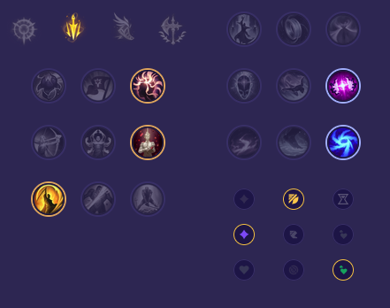

Starter: Ostrze Dorana Mikstura Zdrowia Core Bulid: Kolekcjoner Nagolenniki Berserkera Ostrze Nieskończoności Full Bulid: Pozdrowienia Lorda Dominika Ognista Armata Krwiopijec Hexoptyka C44

Słaby przeciwko: - Veigar - Nilah - Kog'Maw - Brand - Ziggs - Mel Dobry przeciwko: - Yunara - Aphelios - Draven - Lucian - Tristana - Kai'Sa